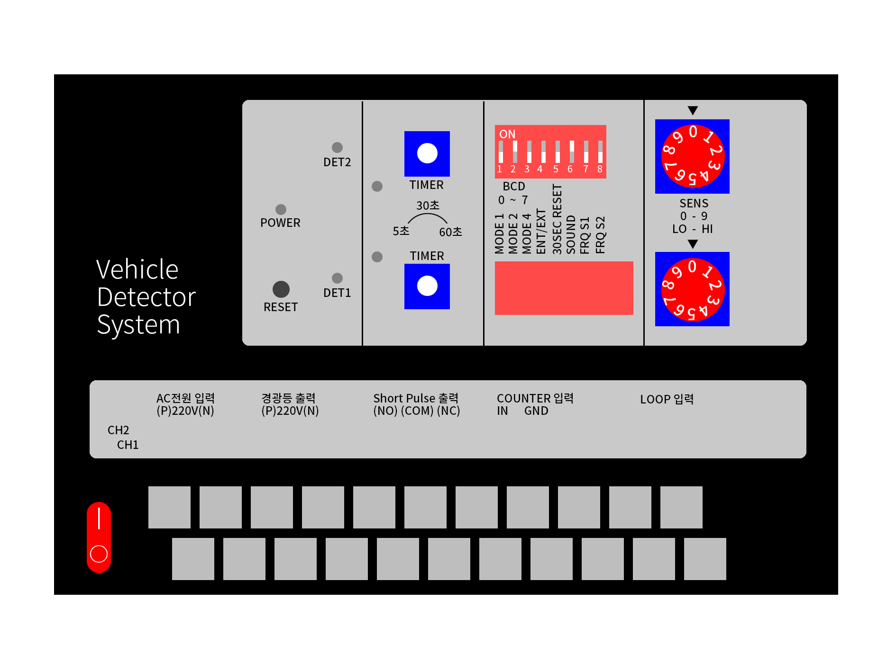
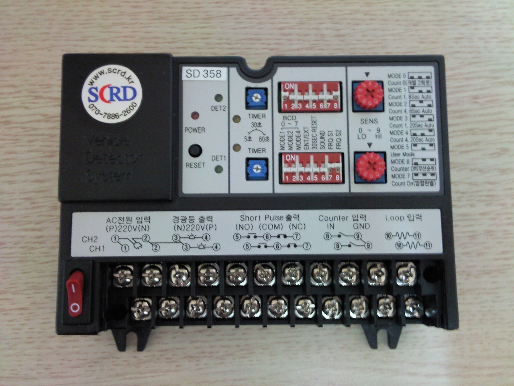

기기 구성도 및 기능설명
경광등 타임
설정 스위치
기능설정 모드
MODE 0
Count 0(개별 2회로)
MODE 1
Count 1. 8Sec Auto
MODE 2
Count 4. 8Sec Auto
MODE 3
Count 1. 20Sec Auto
MODE 4
Count 4. 20Sec Auto
MODE 5
User Mode
MODE 6
Counter Off(우선순위)
MODE 7
Count On(방향판별)
입차, 출차 검지기
감도 조정 스위치
0(낮음) - 9(높음)
출고시 5번에 셋팅
Reset 스위치
AC IN
위쪽 단자와 병렬로 연결되어 있어 아래 단자에만 입력하면 사용 가능함
입차 경광등
출차 주의등
입차 루프코일
출차 루프코일
1. 제품의 개요
차량이 주차장내에 진입할 때 바닥에 매설된 Loop Coil에 의하여 주파수가 변조되어 전달되는 신호를 검지하여 연결된 기기들과 연동시키는 기기이다. 케이스 및 기기의 기능이 완결형으로 루프코일과 1대 1로 검지할 수 있는 검지기와 사용자의 필요에 따라 검지기함에 별도 검지부를 구성한 검지기로 구별된다. 일단 조작이 완료되면 일체의 조정이 없이도 기후변화, 습기변화 등을 자동으로 조정하여 주는 A.F.C (Automatic Frequency Control)가 내장되어 있다.
2. 기기의 사양
- 공급전원 : AC 220 Vac , 50/60 Hz
- 소비전력 : 상시 2W, 작동시 25W
- 사용온도 : -40℃ ~ +60℃
- 습 도 : 30% ~ 85%
- 외함재질 : Steel 1.2T / 흑색 분체도장
- 주 파 수 : 30 ~ 120KHz(대역 변경 가능)
3. 기기의 기능
- 감지방식 : 차량이 통과하면 루프코일이 변조시키는 주파수에 의해 감지.
- 감지능력 : 경자동차 이상 감지, 감도조정은 현장여건에 따라 조정이 가능
- 분해능력 : 루프코일 통과 차량은 매설된 루프코일 폭 이상의 차량 거리 유지
- 감지속도 : 0 ~ 180 km/h
- 감도조정 : 고감도에서 저감도까지 10 단계로 구성
- 타 이 머 : 1 ~ 60초까지 임의로 조정 가능
- 리셋기능 : 오동작 발생시 Auto Reset
- 출력신호 : 무전압 릴레이 접점 출력
- 방향판별 기능 : 차량이 진입하는 방향을 알 수 있는 기능
차량 검지기 2회로
1. 제품 개요
차량이 주차장내에 진입할 때 바닥에 매설된 Loop Coil에 의하여 주파수가 변조되어 전달되는 신호를 검지하여 연결된 기기들과 연동시키는 기기이다. 케이스 및 기기의 기능이 완결형으로 루프코일과 1대 1로 검지할 수 있는 검지기와 사용자의 필요에 따라 검지기함에 따로 검지부를 구성한 검지기로 구별된다. 일단 조작이 완료되면 일체의 조정이 없이도 기후, 습기변화를 자동으로 보정하여 주는 온도 보상회로가 내장되어 있다.